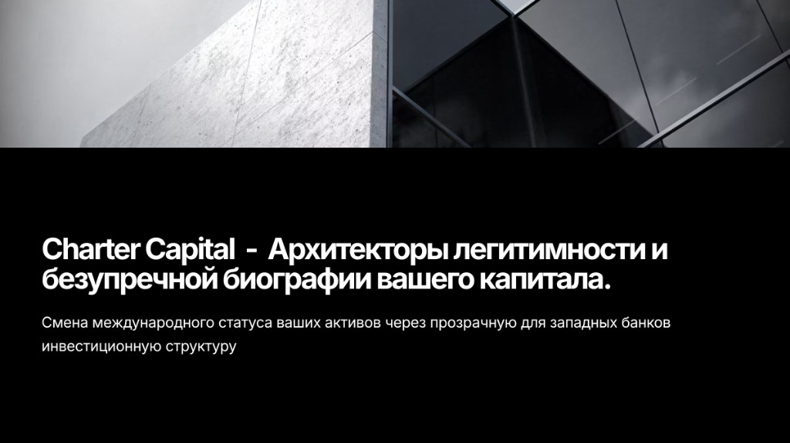
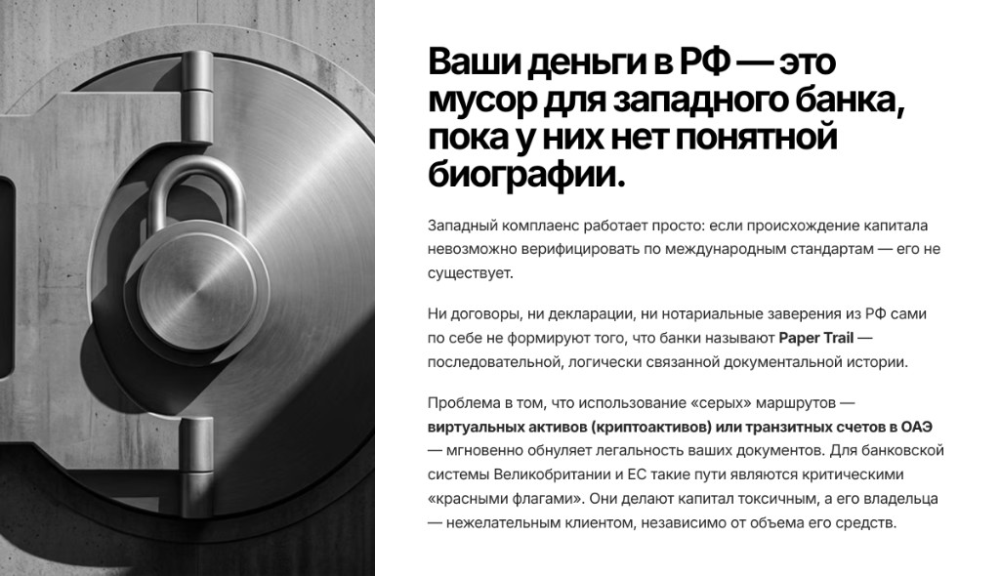
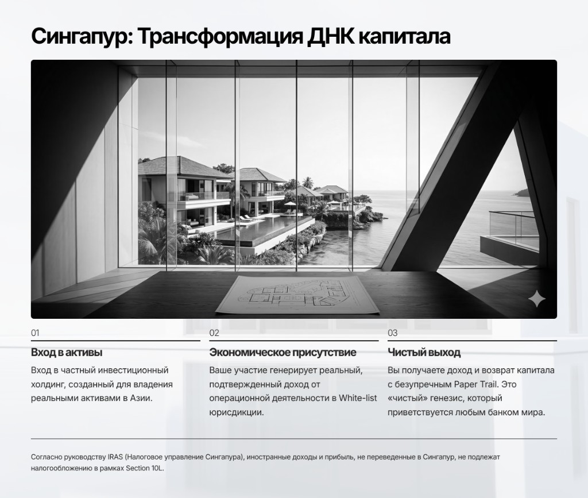
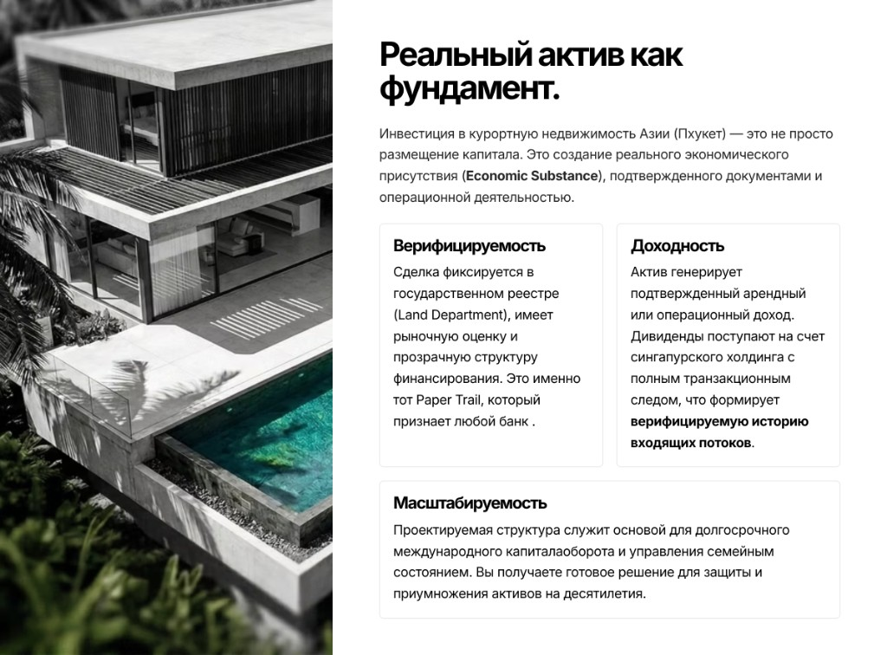
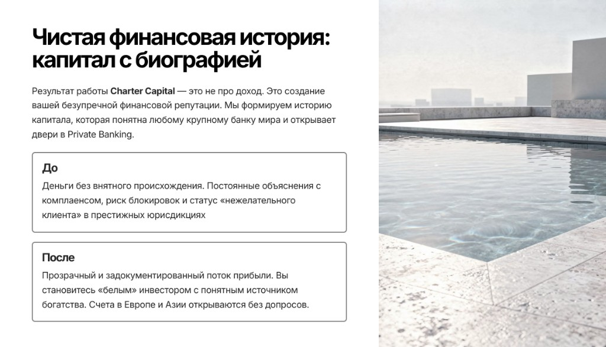

Транзитные узлы ОАЭ
Наличие структур в ОАЭ в цепочке транзакций автоматически поднимает красный флаг в AML-системах и ведет к принудительным блокировкам.

Смена международного статуса ваших активов через прозрачную для западных банков инвестиционную структуру.

Западный комплаенс работает просто: если происхождение капитала невозможно верифицировать по международным стандартам — его не существует.
Ни договоры, ни декларации, ни нотариальные заверения из РФ сами по себе не формируют того, что банки называют Paper Trail — последовательной документальной историей.
«Серые» маршруты и неподтвержденные транзитные цепочки мгновенно обнуляют легальность документов и переводят капитал в зону системного риска.
Инструменты, которые раньше решали задачи, сегодня стали маркерами, закрывающими доступ к мировой финансовой системе навсегда.
Наличие структур в ОАЭ в цепочке транзакций автоматически поднимает красный флаг в AML-системах и ведет к принудительным блокировкам.
On-chain история без институциональной верификации не является достаточным доказательством легальности происхождения средств для Tier-1 банков.
Шаблонные договоры без Economic Substance не принимаются как Source of Wealth и юридически не защищают транзакционный след.

Вход в частный инвестиционный холдинг, созданный для владения реальными активами в Азии.
Операционная деятельность формирует реальный и проверяемый след в white-list юрисдикции.
Доход и возврат капитала с безупречным Paper Trail, который принимается международной банковской системой.

Инвестиция в курортную недвижимость Азии — это не просто размещение капитала, а создание проверяемого экономического присутствия.
Сделка фиксируется в реестре, имеет рыночную оценку и прозрачную структуру финансирования.
Актив генерирует подтвержденный поток дохода с полным транзакционным следом.
Результат работы Charter Capital — не «обход», а создание понятной для банков истории происхождения и движения капитала.
Деньги без внятного происхождения, постоянные запросы комплаенса, риск блокировок и статус нежелательного клиента.
Прозрачный задокументированный поток прибыли и статус «белого» инвестора с подтвержденным источником богатства.

Каждый этап — независимый юридический протокол с верифицируемым транзакционным следом и документальным подтверждением результата.
Сочетание физической надежности недвижимости и правовых преимуществ Сингапура создает рабочую связку для защиты и роста капитала.